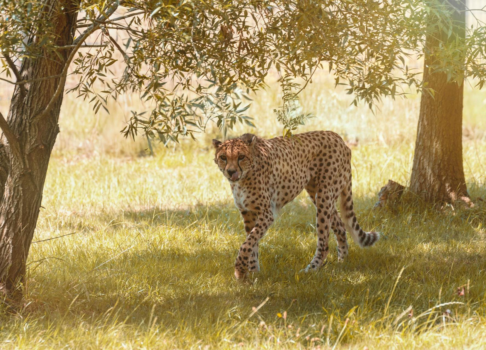
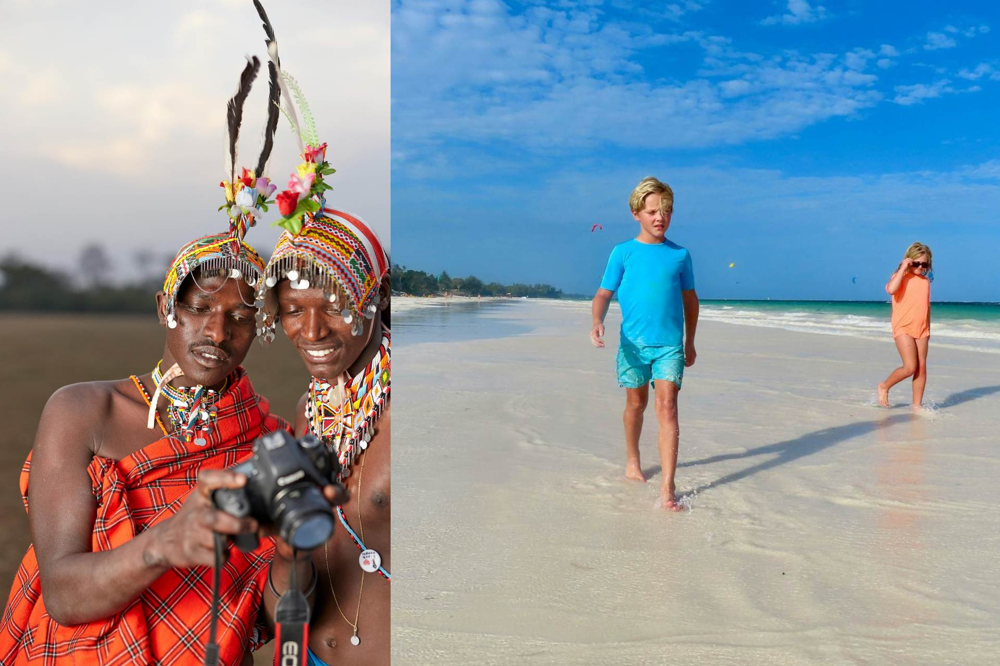
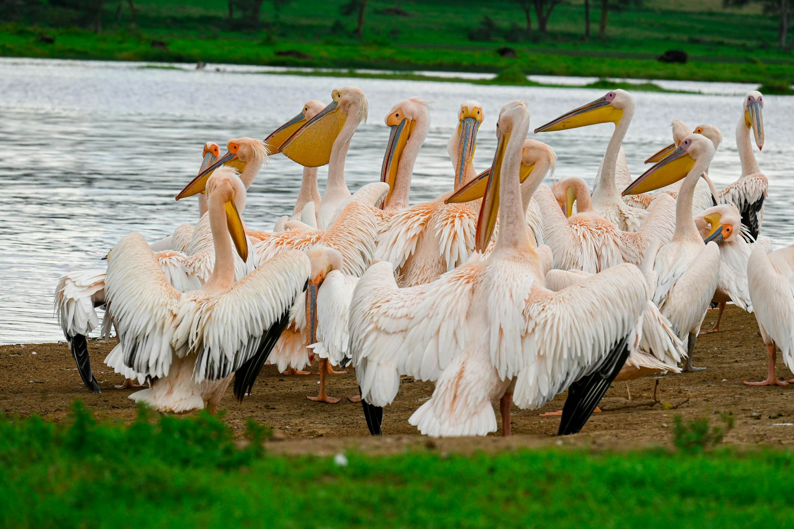

Tsavo Explorer - 5 giorni Esplorate la bellezza selvaggia di Tsavo Est, Tsavo Ovest e Taita Hills. (5 giorni) 
Fusione Costiera e Savana – 8 giorni Esplorate Masai Mara, Lago Nakuru, Amboseli, Tsavo Est e Watamu in questa avventura di 8 giorni. 
Esploratore della Rift Valley – 4 giorni Esplorate Lago Nakuru, Lago Naivasha, Hell’s Gate e Amboseli in questa avventura di 4 giorni. 